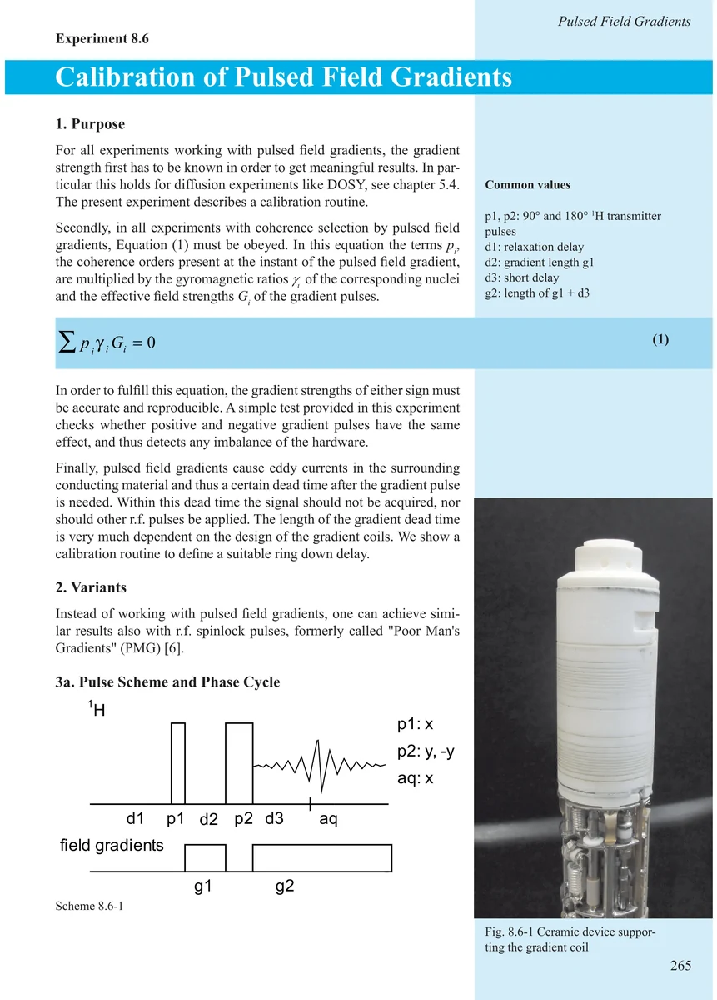
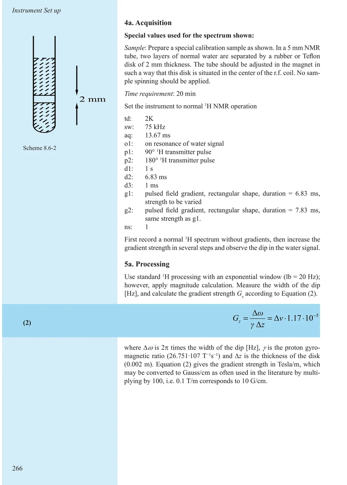
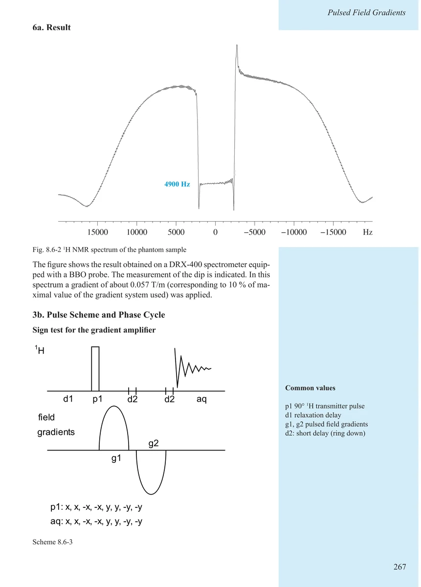
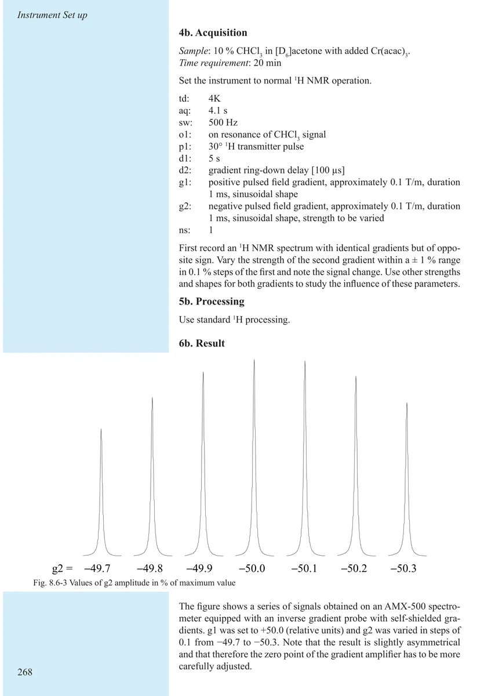
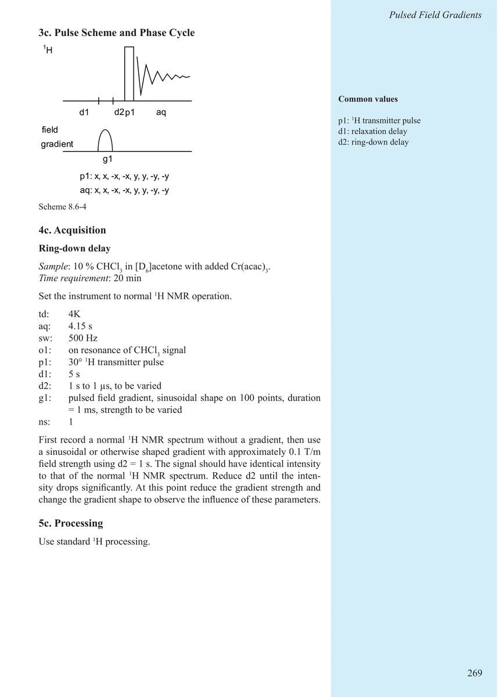
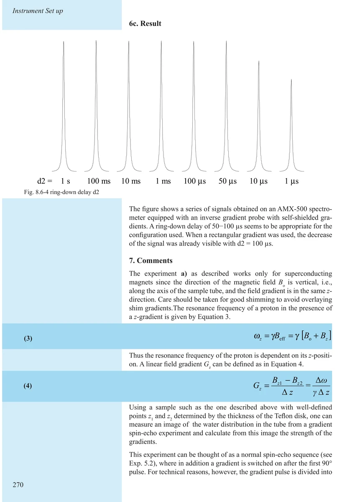
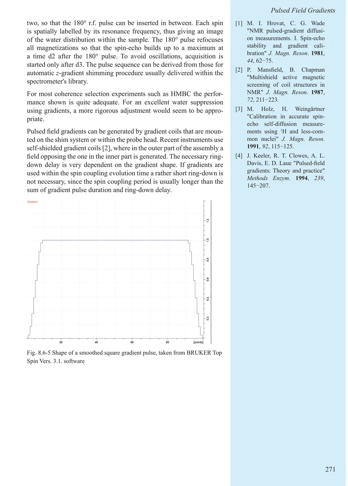
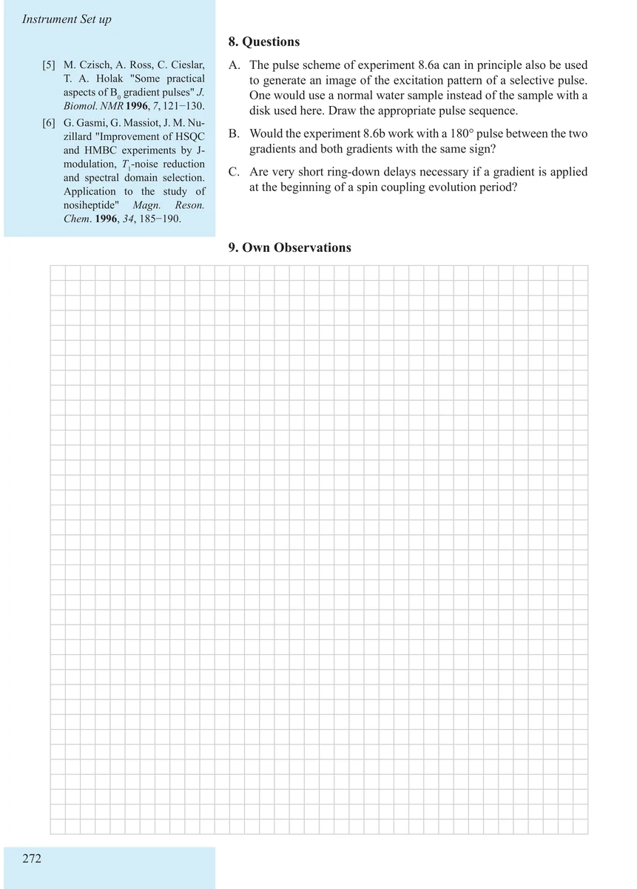

Item 8.6
Calibration of Pulsed Field Gradients
脉冲场梯度校准
PDF 275–282 · 原书 265–272 · Maintenance and Calibration








核磁共振实验方法、脉冲序列与谱图实践
Item 8.6
脉冲场梯度校准
PDF 275–282 · 原书 265–272 · Maintenance and Calibration







